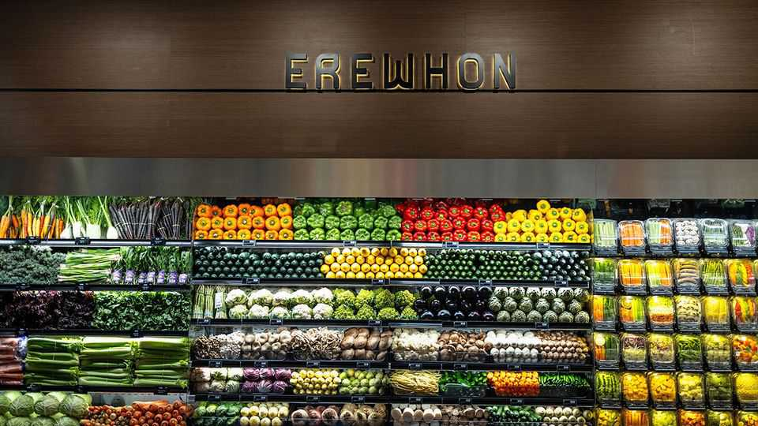

Business | Posh nosh

The tables outside Erewhon in Silver Lake, Los Angeles, are crowded with beautiful young people dressed in athleisure. Inside the swanky store there are long queues at the smoothie and salad bars. The grocery aisles are Instagram-ready: carrots carefully lined up; bananas suspended in orderly bunches; nuts stored in chic mason jars. The beauty section glitters with pricey supplements and vegan protein powders. “Erewhon is somewhere I want to be seen,” confesses Paul, a 27-year-old customer. “It says: I have taste.”
In the past few years Erewhon, a micro-chain of ten stores around LA, has emerged as the grocer of choice for celebrities from Hailey Bieber to the Kardashians. Social media is flooded with posts about its products, which include chicken-noodle soup ($16.50), a strawberry smoothie ($21) and sea-moss gel ($44). The retailer has benefited from a shift in luxury spending away from big-ticket items such as handbags towards smaller indulgences. But much of its success is down to canny strategy.
Erewhon has humble roots. It was founded in the 1960s in Boston by a Japanese couple who were devotees of the “macrobiotic” movement, which encourages followers to eat the simplest foods. Its name, nowhere backwards, comes from a utopian novel by Samuel Butler. Bill Tara, who worked there in the late 1960s, recalls a “food museum” run by hippy volunteers. Shelves were stocked with products including whole grains and miso, with labels that explained “what it was, who grew it and who blessed it on the full moon”, Mr Tara chuckles.
A vibe shift came when Tony and Josephine Antoci, a Californian couple, bought Erewhon in 2011. By then the Boston shop had closed and the retailer had a single LA outpost. They hiked prices and set about remaking Erewhon as a luxury grocer.
That has taken more than photogenic produce and clever social media. Erewhon has been carefully cultivating a sense of exclusivity. Its membership programme—which offers discounts and free smoothies for a fee of $200 per year—is a status symbol akin to joining a private members’ club. Popular products are available only for limited periods. Erewhon plans to add another six stores over the next two years but remain confined to LA. Shoppers elsewhere in America can pay to have its goods delivered. But many choose to journey in person. “It’s, like, the main reason I came,” says Grace, visiting the Silver Lake store from New York.
Erewhon has also been clever in how it has tapped into the “wellness” craze. Many youngsters these days follow diets that baffle their parents—keto, paleo, flexitarian. As inflation has pushed up grocery bills, splurging on healthy food has also become a way to signal affluence. Erewhon’s shelves, heavy with strange-sounding ingredients, meet the moment. But the retailer, which under its new owners has shaken off its earlier macrobiotic dogma, has avoided the puritanism that sinks many health-food shops. Take its popular buffalo cauliflower bites, which are made from organic ingredients but are covered in rice flour and fried.
At the same time, the posh grocer has recognised the growing demand for convenience. Data from NielsenIQ, a research firm, show Gen Z and Millennial Americans are more likely than older generations to eat on the go and less likely to plan dinners. Erewhon is designed for the quick, frequent shopping trips they prefer. The average store is about 12,000 square feet, roughly one-third as big as a full-size Whole Foods, another grocer for affluent urbanites. Erewhon doesn’t disclose what share of revenue comes from its drinks counter and salad bar, but Kabir Jain, an executive at the company, says it is far higher than for conventional grocers; to him, Erewhon is part grocer, part café.
Where to from here? Erewhon’s unhurried expansion may only partly be by choice. There aren’t many neighbourhoods with a large cohort of young people willing to queue for exorbitantly priced produce. Mr Jain thinks there are only four or five cities in America where opening a branch makes sense. High-end fashion labels, suffering from sluggish sales following a period of rapid post-pandemic expansion, should take note. Luxury, by definition, is not for the many, but the few. ■
To track the trends shaping commerce, industry and technology, sign up to “The Bottom Line”, our weekly subscriber-only newsletter on global business.